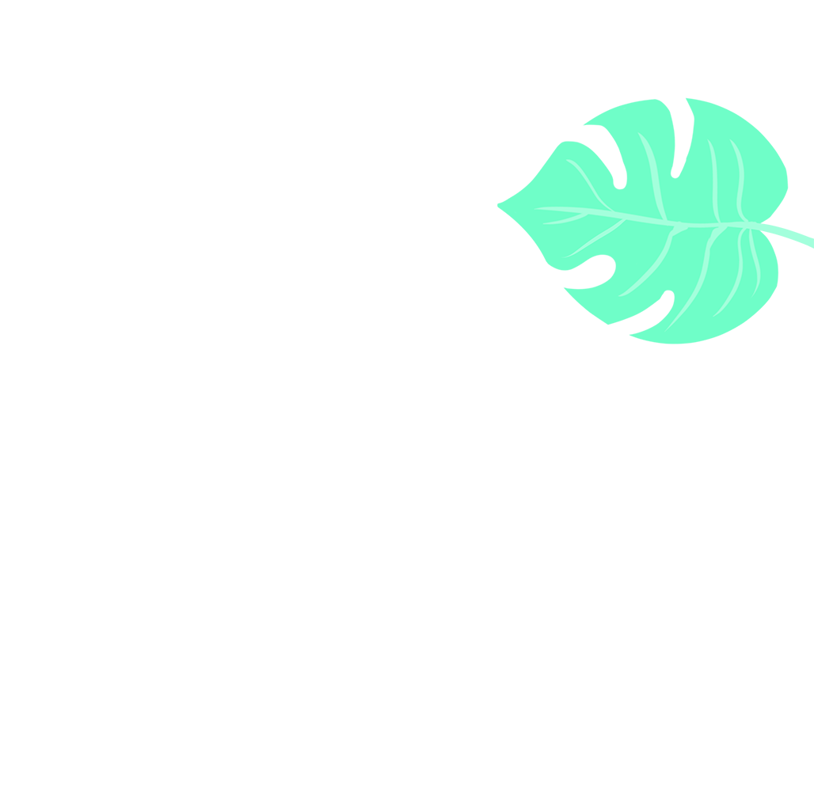
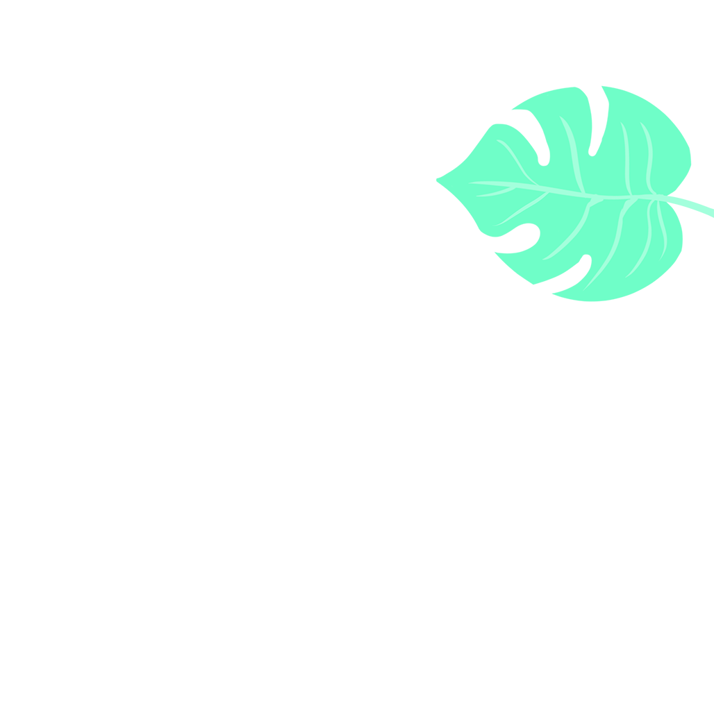
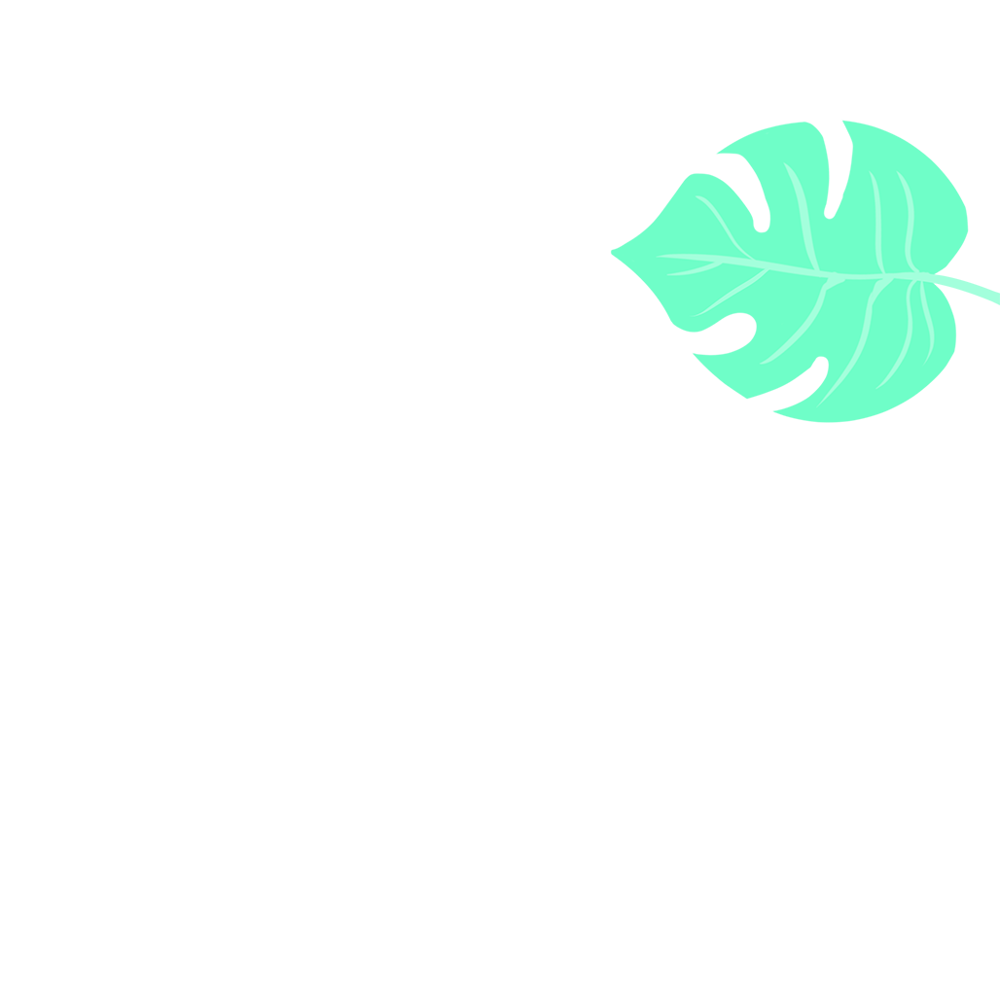
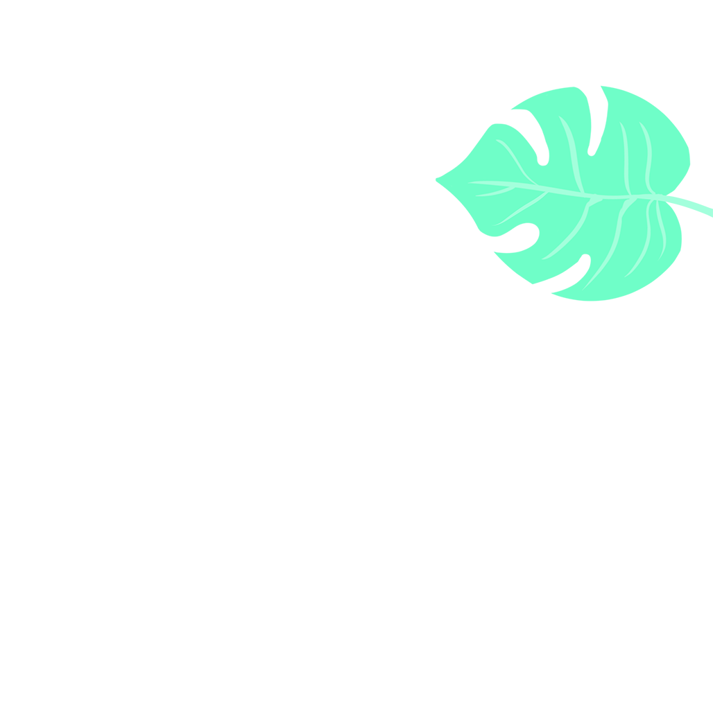

 

ONE moment past our bodies cast No shadow on the plain; Now clear and black they stride our track, And we run home again.
In morning-hush, each rock and bush Stands hard, and high, and raw: Then give the Call: "Good rest to all That keep the Jungle Law!"
Now horn and pelt our peoples melt In covert to abide; Now, crouched and still, to cave and hill Our Jungle Barons glide.
Now, stark and plain, Man's oxen strain, That draw the new-yoked plough; Now, stripped and dread, the dawn is red Above the lit talao.
Ho! Get to lair! The sun's aflare Behind the breathing grass: And creaking through the young bamboo The warning whispers pass.
By day made strange, the woods we range With blinking eyes we scan; While down the skies the wild duck cries: "The Day--the Day to Man!"
The dew is dried that drenched our hide, Or washed about our way; And where we drank, the puddled bank Is crisping into clay.
The traitor Dark gives up each mark Of stretched or hooded claw: Then hear the Call: "Good rest to all That keep the Jungle Law!".